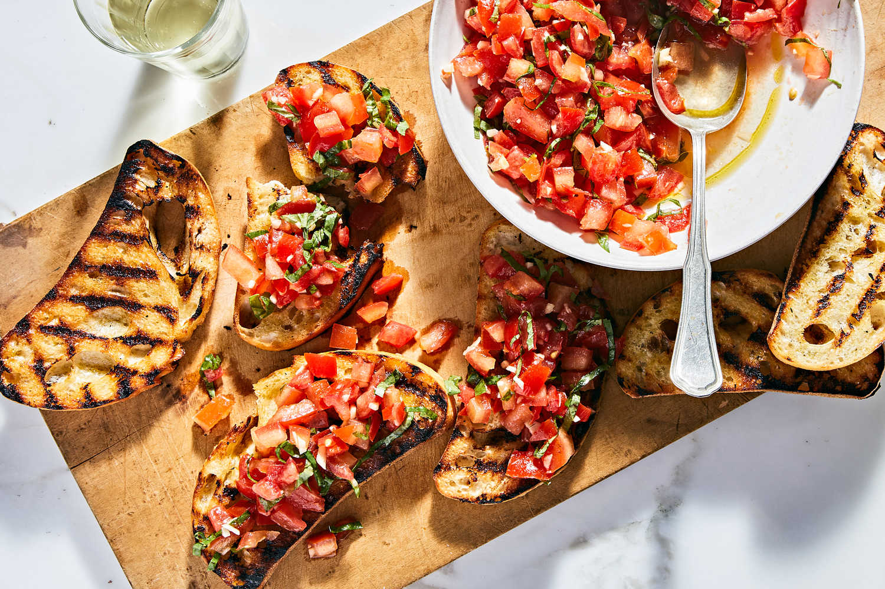

Bruschetta

Description
Bruschetta is a classic Italian appetiser and a staple on any authentic Italian tasting menu. A simple dish packed with flavour comprised of a tomato-based topping on bread, it is ideal for summer gatherings.
Ingredients
- 1/2 of a small red onion, finely chopped
- 500g of medium-sized tomatoes, coarsely chopped and drained
- 3 garlic cloves, crushed
- 8 leaves of fresh basil, finely chopped
- 30ml of balsamic vinegar
- 70ml of extra virgin olive oil
- 1 loaf of crusty bread, preferably a baguette
- Salt
- Black pepper
Steps
- In a large bowl, mix the onions, tomatoes, garlic and basil.
- Add the balsamic vinegar, and olive oil, then mix again.
- Add salt and pepper to taste, then cover and chill for at least an hour.
- Slice the baguette diagonally into approximately a dozen thich slices and lightly toast them.
- Serve the tomato mixture on the warm, toasted bread.